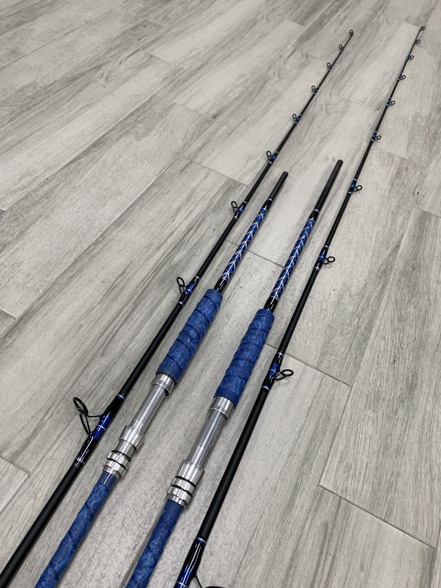
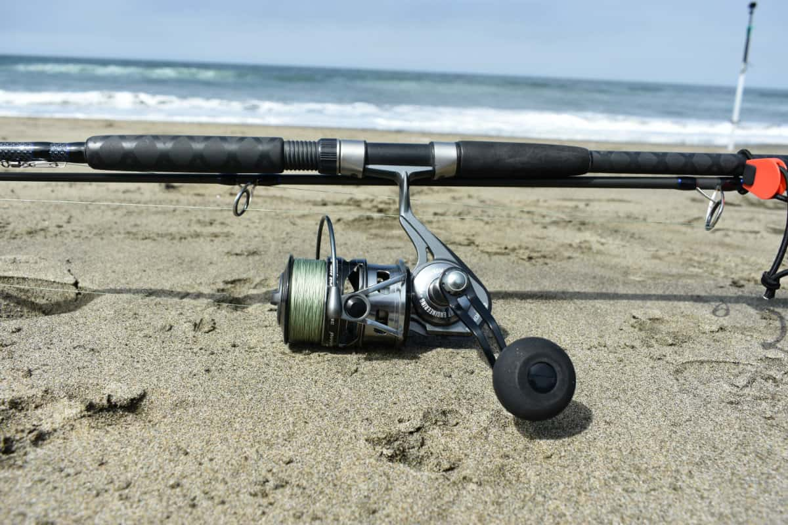
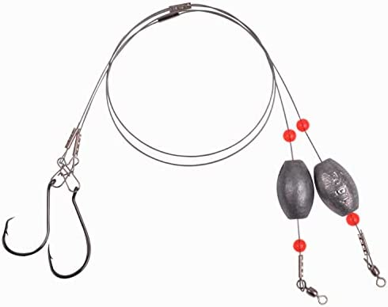

Fishing rods come in many shapes and sizes. However, there are three important variables to consider when choosing a rod.
- Rod Length: Surf fishing rods are between 9 and 14 feet long. When choosing a length it is important to consider the angler's physical ability. The shorter the rod, the easier it is to handle. However, you want to choose the longest rod that is suitable for you.
- Rod Power: Rod power is basically the strength of the rod. They range from light to heavy. For surf fishing, usually you will want a rod somewhere in the range of medium-heavy to best catch those big fish.
- Rod Action: The action of a rod is defined as the bend or taper a rod will display under pressure. Fast action bends from the tip and slow action bends in the middle of the rod. The action affects cast distance and hook setting power. A fast action rod will give the best cast distance.

Fishing reels greatly affect your ability to pull in a fish. This is three examples of reels that are best suited for surf fishing.
- Spincast: This is one of the easiest reels to use. This makes it perfect for children. The only downfall of this reel is it costs you distance and accuracy when casting.
- Baitcasters: These are extremely difficult to control. This reel was solely designed for accuracy and not for usability or easiness of casting. This should only be used by experienced anglers.
- Spinning: These are the most popular reels for a good reason. This design adds versatility, execeptional usability, and great accuracy. This reel however is not built for the heavier fishing lines.

There are so many ways to tie and rig up your bait. Here is three examples of simple rigs to use.
- Fish-finder: The fish-finder rig is the simplest of them all. It consists of a leader with a hook, and a barrel swivel is tied to the mainline behind a fish-finder weight slide.
- High/Low: The high/low rig is a little more complex. With this one the weight is below the hooks and the hooks are spread out above the weight. This allows for using two baits at once.
- Whole Mullet: The whole mullet rig is quite popluar. This rig consists of a weight at the top of the rig, with a styrofoam float below the weight and above the hook, and a double-hook at the very bottom.